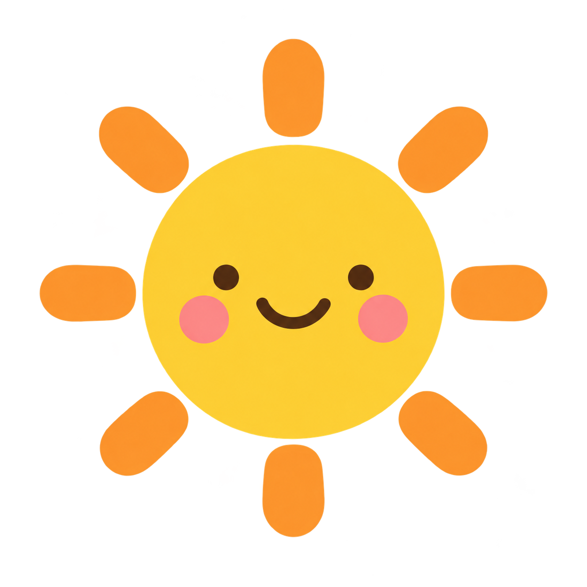

回分類首頁
作品相簿
設定與資訊
簡單
全部
細節較多

小小畫家
畫出你的想像力！
回選圖
上一步
下一步
回首頁
顏色
✕
彩虹筆
✓
調出自己的顏色
色相
濃淡
明亮
用這個顏色
存成圖片
全螢幕
關於畫室
關於畫室
✕
離線圖片
下載圖片分類
下載這個分類
公主線稿：Disneyclips.com · © Disney · 非商業使用
小龍線稿：TheToyZone
夜煞線稿：Cute Coloring · 非商業使用
光煞線稿參考：ColoringBook.ai · © DreamWorks
蓋比線稿：DreamWorks · © DreamWorks
蓋比角色線稿：WakeTheKids
派對貓：ColoringPages101
夜煞補充圖：Supercoloring／使用者提供
我的小畫展
✕